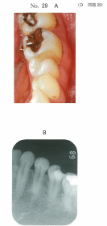
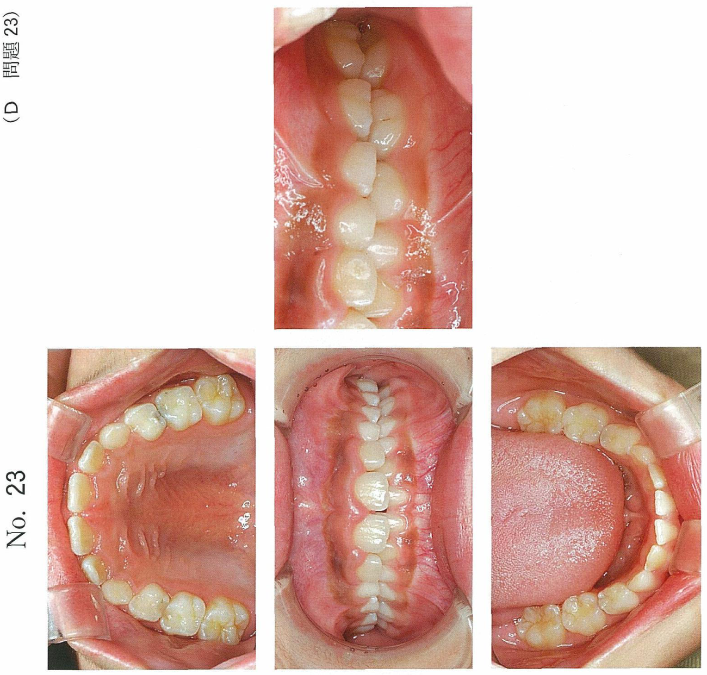

歯髄鎮静法（歯髄鎮痛消炎療法）
歯髄保存療法の分類
| 療法 | 目的 | 適応 |
|---|---|---|
| 歯髄鎮痛消炎療法 | 歯髄の鎮痛消炎、感覚正常化 | 歯髄充血、可逆性歯髄炎 |
| 覆髄法 | 歯髄保護、修復象牙質形成促進 | 健康歯髄〜可逆性歯髄炎 |
歯髄鎮痛消炎療法の目的
- 刺激原因を排除して歯髄を安静に保つ
- 薬剤の適用により歯髄の鎮痛消炎をはかる
- 亢進した歯髄感覚を正常に戻す
- 歯髄を健康な状態で保存する
適応症
歯髄鎮痛消炎療法の適応
- 歯髄充血
- 急性症状のある可逆性歯髄炎（限局性、間欠性の自発痛）
禁忌症
- 不可逆性歯髄炎（急性化膿性歯髄炎など）
※ 不可逆性歯髄炎には歯髄保存を前提とした歯髄鎮痛消炎療法は適用しない
使用薬剤
歯髄鎮静・鎮痛薬
| 分類 | 薬剤例 |
|---|---|
| フェノール製剤 | 液状フェノール、フェノール・カンフル、フェノール・チモール |
| フェノール誘導体 | グアヤコール、パラクロロフェノール・グアヤコール |
| 植物性揮発油類 | ユージノール、チョウジ油 |
酸化亜鉛ユージノールセメント
- ユージノールと酸化亜鉛を練和して使用
- 仮封と鎮痛消炎処置を同時に行える
- 硬化後も未反応のユージノールが薬効を示す
術式
| 順序 | 操作 |
|---|---|
| 1 | 必要に応じて局所麻酔 |
| 2 | ラバーダム装着と術野の消毒 |
| 3 | 齲窩の開拡と軟化象牙質の除去 |
| 4 | 窩洞の清掃と乾燥（過度の乾燥は避ける） |
| 5 | 歯髄鎮静薬の貼付と仮封（または酸化亜鉛ユージノールセメント填塞） |
| 6 | 経過観察と修復処置 |
予後
- 経過良好 → 最終修復処置へ
- 軽快しない → 歯髄除去療法（抜髄）へ移行
可逆性歯髄炎の臨床的特徴
- 間欠性の自発痛（持続性ではない）
- 限局性の炎症
- 刺激除去により症状が消退する可能性がある
過去問
103D29
47歳の男性。下顎左側第二小臼歯の疼痛を主訴として来院した。他院を受診したが、その後も間歇性の自発痛が続いているという。初診時の口腔内写真（別冊No.29A）、エックス線写真（別冊No.29B）及び処置時の口腔内写真（別冊No.29C）を別に示す。
次に行うのはどれか。1つ選べ。



a 髄室開拡
b コンポジットレジン修復
c グラスアイオノマーセメント修復
d テンポラリーストッピングによる仮封
e 酸化亜鉛ユージノールセメントの填塞
b コンポジットレジン修復
c グラスアイオノマーセメント修復
d テンポラリーストッピングによる仮封
e 酸化亜鉛ユージノールセメントの填塞
正解：e
【解説】間欠性の自発痛は可逆性歯髄炎を示唆する。可逆性歯髄炎には歯髄鎮痛消炎療法が適応となる。酸化亜鉛ユージノールセメントはユージノールの鎮静作用により、仮封と鎮痛消炎を同時に行える。髄室開拡（抜髄）は不可逆性歯髄炎の適応であり、この症例では歯髄保存を試みるべきである。